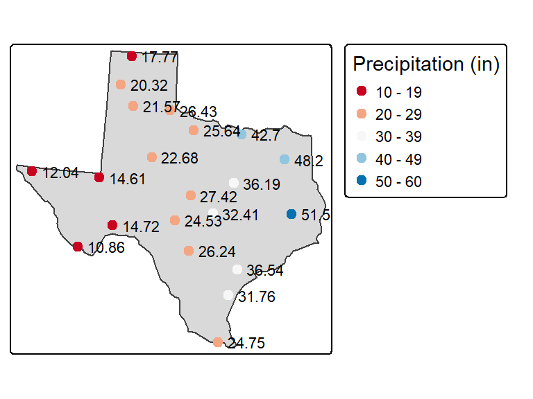
16 Spatial Interpolation
16.1 Introduction
Given a distribution of meteorological stations reporting precipitation values, how can we estimate precipitation at locations where no observations were collected?
To answer this question, we first need to clarify the nature of our point dataset. In Chapters 14 and 15, we worked with point data representing a complete enumeration of discrete events or observations. In those cases, the phenomenon of interest existed only at the observed point locations and could therefore only be measured at those locations. For example, when mapping the density of retail stores or crime incidents, the points themselves represent the complete set of observed events.
Here, however, the point data represent samples of an underlying phenomenon that can be measured anywhere within our study area. Precipitation is not limited to the locations of meteorological stations; the stations merely provide observations of a continuous environmental field. Consequently, creating a point-density map from these data would only answer a question such as “Where are the meteorological stations concentrated within Texas?” rather than “How does precipitation vary across Texas?”
To estimate values at unsampled locations, we use spatial interpolation methods. Interpolation techniques use the values observed at sampled locations to predict values elsewhere in the study area, thereby transforming a set of discrete sample points into a continuous surface.
Many interpolation methods exist, but most can be grouped into two broad categories:
- Deterministic interpolation, which predicts values using mathematical rules based directly on the observed data.
- Statistical interpolation, which incorporates an explicit statistical model of spatial variation and spatial dependence.
In the sections that follow, we examine representative methods from each category and explore how their performance can be evaluated.
16.2 Deterministic Approach to Interpolation
Deterministic interpolation methods estimate values at unsampled locations using mathematical rules based directly on the observed data. These methods do not explicitly model statistical properties such as spatial autocorrelation or uncertainty. Instead, they infer values using assumptions about the influence of nearby observations.
In this section, we explore two deterministic methods: proximity (also called Thiessen) interpolation and Inverse Distance Weighted (IDW) interpolation.
16.2.1 Proximity interpolation
Proximity interpolation (also known as Thiessen interpolation) is perhaps the simplest interpolation method and one of the oldest. The idea is straightforward: every unsampled location is assigned the value of its nearest sampled point.
This is accomplished by partitioning the study area into a set of tessellated regions. Boundaries are constructed midway between neighboring sample locations, creating a set of polygons where every location inside a polygon is closer to its enclosed sample point than to any other sample point. Each polygon therefore inherits the value of its sample point.
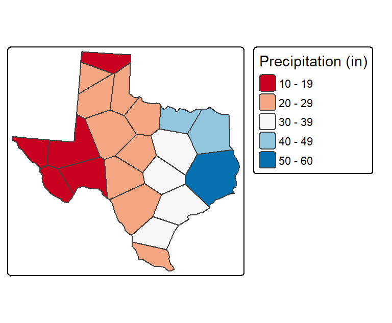
One limitation of this approach is that values change abruptly across polygon boundaries. As a result, the interpolated surface is discontinuous, whereas most environmental variables such as temperature, elevation, and precipitation tend to vary more gradually across space.
Thiessen’s method was particularly useful at a time when interpolation had to be performed manually. Today, modern computing allows us to implement more sophisticated interpolation techniques that produce smoother surfaces, one of which is introduced next.
16.2.2 Inverse Distance Weighted (IDW)
The Inverse Distance Weighted (IDW) method estimates values at unsampled locations by computing a weighted average of nearby sampled values. The underlying assumption is simple: observations that are closer to an unsampled location should exert a greater influence on the prediction than observations that are farther away.
The interpolated value at an unsampled location \(j\) is computed as:
\[ \hat{Z_j} = \frac{\sum_i{Z_i/d^n_{ij}}}{\sum_i{1/d^n_{ij}}} \] where:
- \(\hat{Z_j}\) is the predicted value at location \(j\),
- \(Z_i\) is the observed value at sampled location \(i\),
- \(d_{ij}\) is the distance between locations \(i\) and \(j\),
- \(n\) is the power coefficient, which controls how quickly a point’s influence decreases with distance.
The hat, \(\hat{}\), above the variable \(z\) indicates that the value is being estimated rather than directly observed.
The power coefficient \(n\) controls the relative importance of nearby and distant observations. Larger values of \(n\) cause the influence of distant points to decrease rapidly, giving nearby points much greater control over the prediction. As \(n\) becomes very large, the resulting surface begins to resemble a Thiessen interpolation because the prediction is dominated by the closest sample point.
Conversely, smaller values of \(n\) reduce the differences among the weights assigned to neighboring points. In the extreme case where all points receive similar weights, the interpolated value approaches the average of the nearby observations.
The following figure shows an IDW interpolation generated using a power coefficient of \(n=2\). The sampled precipitation values are superimposed on the interpolated raster.
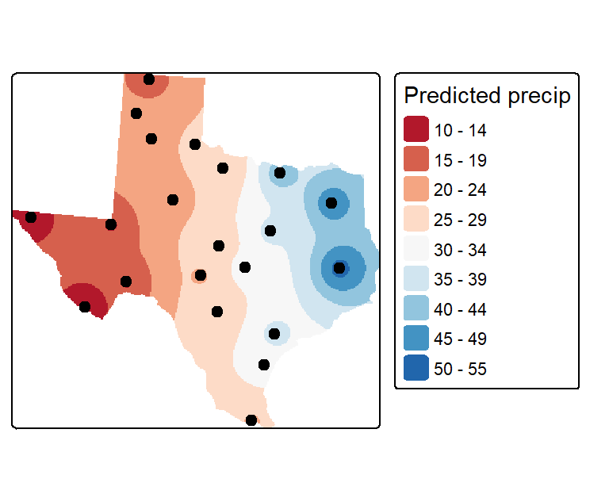
The power coefficient controls how rapidly the influence of a sampled point decreases with distance from the prediction location. In the following example, an \(n\) value of \(15\) is used. Relative to the previous interpolation, nearby points exert much stronger influence on the predicted values, whereas distant points have very little impact. As a result, the interpolated surface begins to resemble a proximity (Thiessen) interpolation, with localized zones of influence surrounding the sampled points.
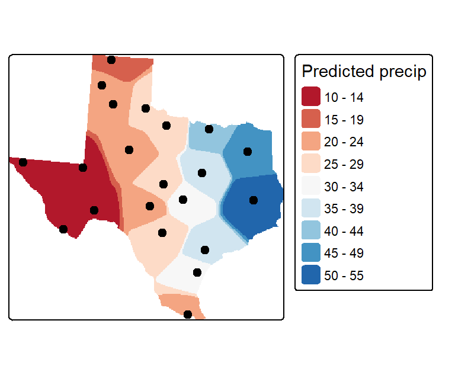
16.2.3 Evaluating Interpolation Accuracy
Selecting the best interpolation parameters can be challenging. Beyond simply eyeballing the results, how can we quantify the accuracy of an interpolated surface? One approach is to divide the sample points into two groups: a training set used to generate the interpolation and a validation set used to assess its performance. While straightforward to implement, this approach reduces the amount of information available to the interpolator and can therefore lead to less reliable estimates.
A more efficient approach is to temporarily remove one point from the dataset, interpolate its value using all remaining points, and then compare the predicted value to the observed value at the omitted location. This process is repeated for every point in the dataset while keeping the interpolation parameters fixed. The procedure is commonly known as jackknifing or leave-one-out cross-validation.
The performance of the interpolator can be summarized using the Root Mean Squared Error (RMSE):
\[ RMSE = \sqrt{\frac{\sum_{i=1}^n (\hat {Z_{i}} - Z_i)^2}{n}} \]
where \(\hat {Z_{i}}\) is the interpolated value at the unsampled location i (i.e. location where the sample point was removed), \(Z_i\) is the true value at location i and \(n\) is the number of points in the dataset.
We can visualize the results by plotting the predicted values against the observed values. The solid diagonal line represents perfect agreement between predicted and observed values. If the interpolator were perfectly accurate, all points would fall on this line. The red dashed line is a fitted regression line included to help visualize the overall pattern of agreement.
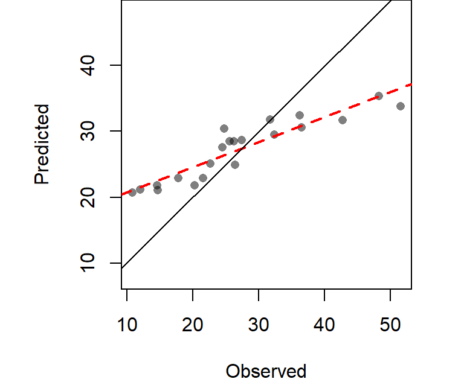
The computed RMSE from the above working example is 6.989 inches.
We can further evaluate interpolation uncertainty by creating a confidence-interval map. This involves generating all \(n\) leave-one-out interpolation surfaces and computing a confidence interval for each raster cell.
Locations whose predicted values vary substantially across the leave-one-out realizations will have larger confidence intervals, indicating greater uncertainty. Conversely, locations whose predicted values remain relatively stable across the realizations will have smaller confidence intervals, indicating greater confidence in the prediction.
The following map shows the 95% confidence interval associated with each location in the study area.
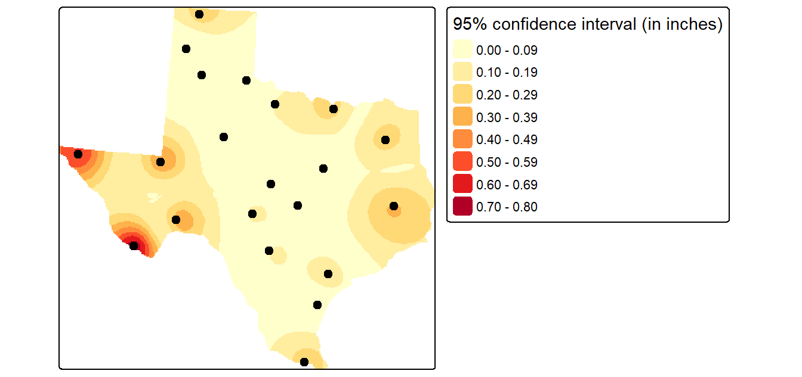
IDW is one of the most widely used interpolation methods because of its simplicity and ease of implementation. In many situations it produces reasonable results. However, the choice of power coefficient remains somewhat subjective and the method does not explicitly model the spatial structure of the data.
A second class of interpolation methods incorporates information about large-scale spatial trends (first-order effects) and spatial autocorrelation (second-order effects). These statistically based approaches, introduced next, provide a more rigorous framework for interpolation.
16.3 Statistical Approach to Interpolation
Unlike deterministic methods, which rely on predefined mathematical rules, statistical interpolation methods use models to characterize spatial variation in the observed data. These methods can incorporate information about large-scale spatial trends (first-order effects) as well as spatial autocorrelation (second-order effects) when estimating values at unsampled locations.
In this section, we explore two examples of statistical interpolation: surface trend and Kriging.
16.3.1 Trend Surfaces
A trend surface models how an attribute varies as a function of spatial location. You can think of trend surface modeling as a regression in which the predictor variables are the spatial coordinates \(X\) and \(Y\). The resulting model is then used to estimate values at unsampled locations.
Trend surfaces describe broad, large-scale variation across a study area and therefore capture what we previously referred to as a first-order effect. In Chapter 12, trend surfaces were introduced as a tool for characterizing spatial trends in continuous fields. Here, we revisit them as an interpolation method that can be used to predict values at unsampled locations.
We will explore three trend surface models of increasing complexity: a 0th-order, 1st-order, and 2nd-order trend surface.
0th Order Trend Surface
The simplest possible trend surface assumes that the attribute being modeled does not vary across space. In this case, every unsampled location is assigned the same value: the mean of the observed sample values. The model takes the form: \[ Z = a \]
where \(a\) is the mean precipitation value of all sample points (27.1 inches in our working example). This model produces a perfectly flat (horizontal) surface in which every location is assigned the same precipitation value.
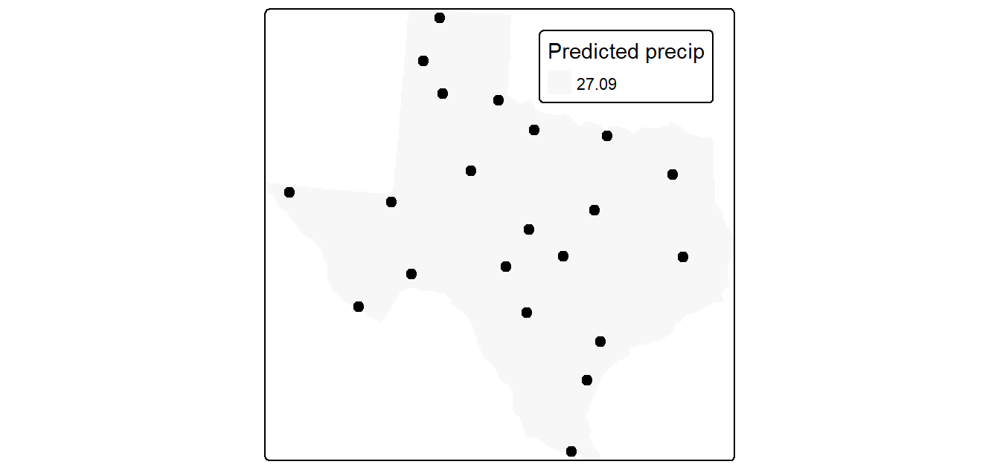
Because all spatial variation is ignored, the resulting map is generally uninformative. Nevertheless, the 0th-order trend surface provides a useful baseline against which more complex trend surface models can be compared. In the next example, we allow the surface to vary as a function of location, producing a 1st-order trend surface.
1st Order Trend Surface
A 1st-order trend surface allows the interpolated value to vary as a linear function of spatial location. The resulting surface is a tilted plane whose slope and orientation are determined by the fitted coefficients. The model takes the form:
\[ Z = a + bX + cY \] where \(X\) and \(Y\) are the spatial coordinates and \(a\), \(b\), and \(c\) are coefficients estimated from the observed data.
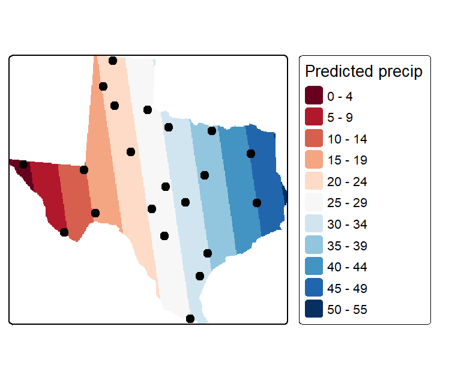
Unlike the 0th-order model, which assigns the same value everywhere, the 1st-order trend surface captures broad spatial variation across the study area. In this example, the model highlights a pronounced east-west precipitation gradient.
However, a tilted plane assumes that the rate of change is constant across the entire study area. Is the precipitation trend truly uniform from east to west? To allow for curvature in the trend surface, we next consider a more flexible model: the 2nd-order (quadratic) trend surface.
2nd Order Trend Surface
A 2nd-order trend surface extends the 1st-order model by allowing the rate of change to vary across space. The resulting surface is no longer a tilted plane but can bend and curve to accommodate more complex spatial patterns. The model takes the form:
\[ Z = a + bX + cY + dX^2 + eY^2 + fXY \] where the quadratic terms (\(X^2\) and \(Y^2\)) and the interaction term (\(XY\)) allow the surface to capture curvature and changes in slope across the study area.
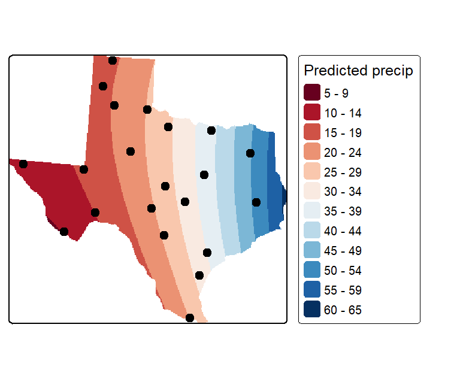
Relative to the 1st-order trend surface, this model captures a slight curvature in the east-west precipitation gradient. However, the improvement is modest, suggesting that the additional model complexity may not be justified for this dataset.
As trend surface order increases, the fitted surface becomes more flexible and can capture increasingly complex spatial patterns. However, higher-order models also risk fitting noise in the sampled data rather than meaningful spatial structure. In practice, it is often preferable to use the simplest model that adequately characterizes the observed trend.
16.3.2 Ordinary Kriging
Several forms of kriging interpolators exist: ordinary, universal and simple just to name a few. In this chapter, we focus on ordinary kriging (OK), one of the most widely used geostatistical interpolation methods.
Unlike deterministic interpolators such as Thiessen interpolation and IDW, which rely on predefined distance-based rules, ordinary kriging explicitly models the spatial structure of the data. In particular, it uses information about spatial autocorrelation to determine how much influence neighboring observations should have on an unsampled location.
As discussed in previous chapters, spatial phenomena often exhibit both first-order effects (large-scale spatial trends) and second-order effects (spatial autocorrelation). The final interpolation incorporates information from both first-order effects (through the trend model) and second-order effects (through the variogram and kriging interpolation).
The ordinary kriging workflow typically involves five steps:
- Removing any spatial trend in the data (if present).
- Computing the experimental variogram, \(\gamma\), which quantifies spatial autocorrelation.
- Defining a variogram model that characterizes the spatial autocorrelation structure.
- Interpolating the residual surface using the variogram model.
- Adding the interpolated residual surface back to the trend surface to produce the final prediction map.
These steps are outlined in the following subsections.
16.3.2.1 De-trending the data
One assumption underlying ordinary kriging is that the mean and variance of the phenomenon being studied remain constant across the study area. In other words, the data should not exhibit a spatial trend (sometimes referred to as drift in the geostatistics literature) across its studied extent.
As discussed earlier in this chapter, trend surfaces provide a convenient way to model broad spatial variation. Many software packages allow the user to fit and remove a trend surface, typically using a first-, second-, or third-order polynomial. In our example, we use the 1st-order trend surface because the 2nd-order model provided only a modest improvement over the simpler fit.
Removing the trend produces a set of residuals, which represent the variation not explained by the large-scale spatial pattern. These residuals are then used in the variogram and kriging calculations that follow. Once the residual surface has been interpolated, the fitted trend surface is added back to produce the final prediction map.
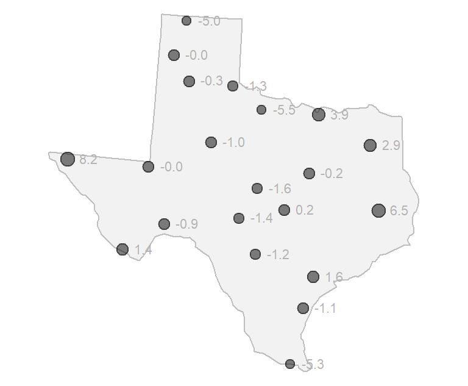
16.3.2.2 Experimental Variogram
The key idea behind kriging is that observations closer together in space tend to be more similar than observations farther apart. To quantify this relationship, we examine how differences between attribute values change as the distance between sample locations increases.
We begin by computing a quantity called the semivariance, denoted by \(\gamma\). Semivariance measures how different two observations are from one another. Small values of \(gamma\) indicate that two locations have similar attribute values, whereas large values indicate greater dissimilarity.
For a pair of locations, semivariance is computed as:
\[ \gamma = \frac{(Z_2 - Z_1)^2}{2} \] where \(Z_1\) and \(Z_2\) are the attribute values observed at the two locations.
For example, consider two meteorological stations whose detrended precipitation values are -1.2 and 1.6.
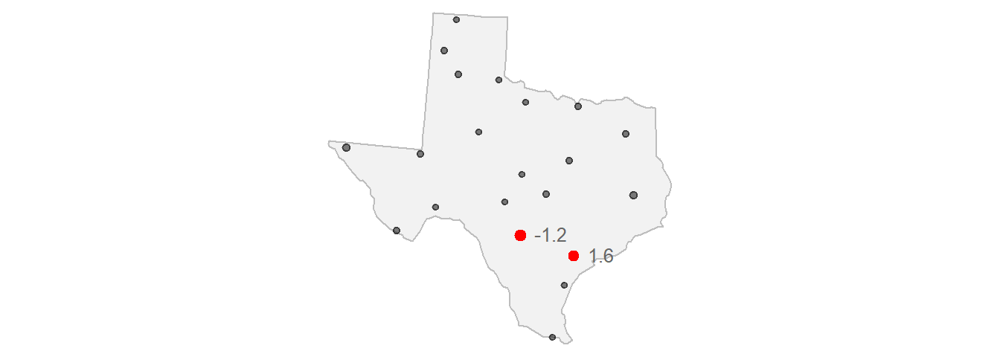
Their semivariance is:
\[ \gamma = \frac{(-1.2 - (1.6))^2}{2} = 3.92 \]
We can repeat this calculation for every pair of sample locations in the dataset. Plotting the resulting semivariance values against the distances separating the corresponding point pairs produces the following graph:
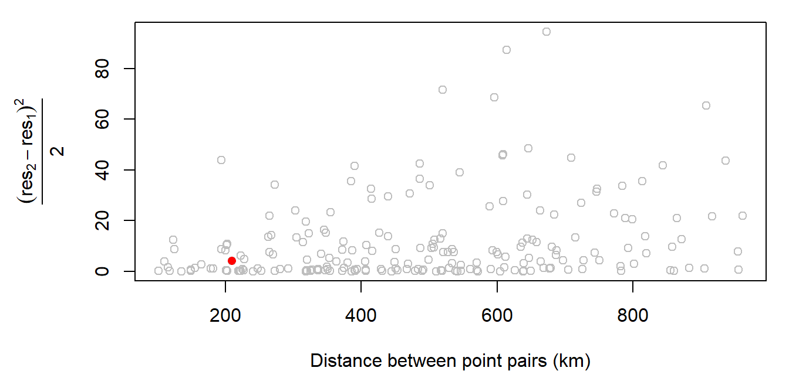
The red point represents the semivariance computed in the previous example. The corresponding pair of stations is separated by approximately 209 km.
The above graph is called an experimental variogram cloud (or experimental semivariogram cloud). The terms variogram and semivariogram are commonly used interchangeably in introductory geostatistics, and we will use the term variogram throughout the remainder of this chapter.
The word experimental is important because the graph is constructed from a sample of observations rather than from the complete continuous field. Our goal in the next step is to use these sample-based estimates to model the underlying spatial autocorrelation structure of the precipitation field.
16.3.2.3 Sample Experimental Variogram
Although the variogram cloud contains all pairwise semivariance information, it can be difficult to interpret because of the large number of point pairs. In our example, just 50 sample points generate 465 point pairs, even when considering only the first third of the maximum lag distance.
A common way to simplify the variogram cloud is to group point pairs into distance intervals called lags. The semivariance values within each lag are then summarized, typically by computing their average.
In the following example, the variogram cloud is divided into 15 lag intervals. The average semivariance within each lag is shown as a red point. These summary points are referred to as sample experimental variogram estimates, and the resulting graph is called the sample experimental variogram.
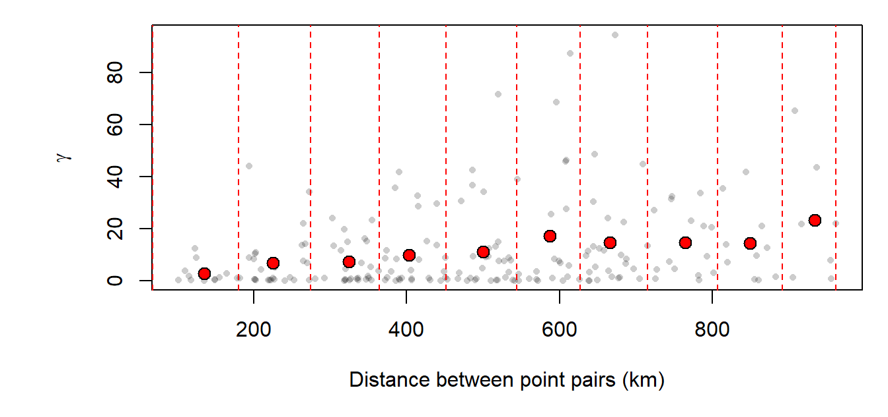
16.3.2.4 Experimental Variogram Model
The sample experimental variogram provides a useful summary of the spatial autocorrelation present in the data. However, kriging requires a smooth mathematical function from which semivariance values can be predicted at any distance. We therefore fit a mathematical model to the sample experimental variogram.
Many variogram models have been proposed, and the models available often depend on the software being used. Examples of commonly used variogram models are shown below.
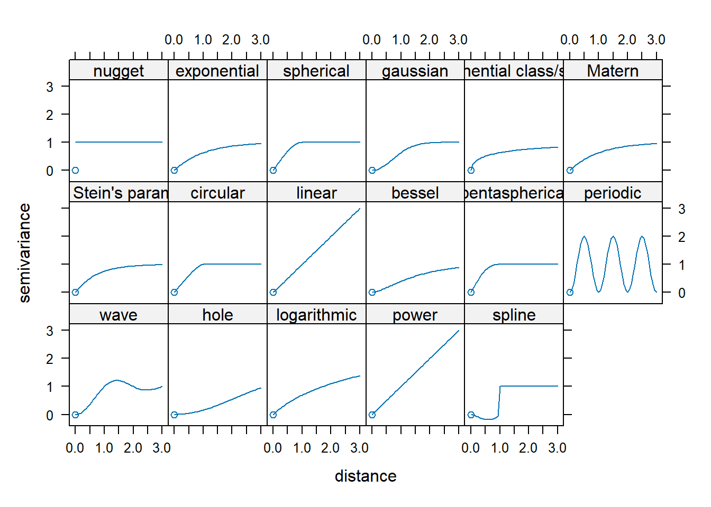
gstat package.
The goal is to identify the model that best describes the sample experimental variogram. Most variogram models are characterized by parameters that control the shape of the curve, including the nugget, range, and sill (or partial sill).
The following figure illustrates these parameters. The nugget is the value where the variogram model intersects the y-axis. A non-zero nugget implies that nearby observations are not perfectly identical, which may reflect measurement error or variability occurring at scales smaller than the sampling distance.
The partial sill is the vertical distance between the nugget and the plateau of the variogram. If the nugget is zero, the partial sill and sill are equivalent, and the term sill is typically used. The range is the distance at which the variogram levels off, indicating the distance beyond which observations are no longer strongly spatially correlated.
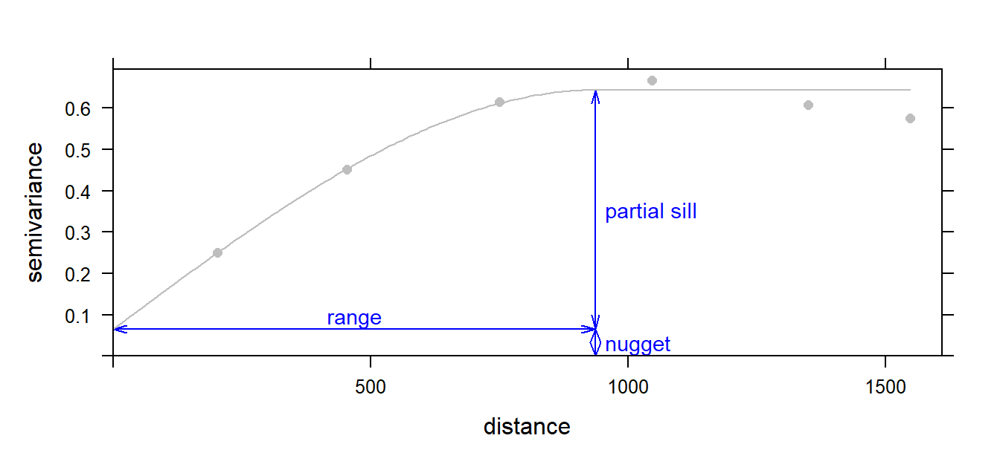
In our working example, we fit a spherical variogram model, one of the most commonly used variogram models in geostatistics. Other frequently used models include the linear and Gaussian variogram models.
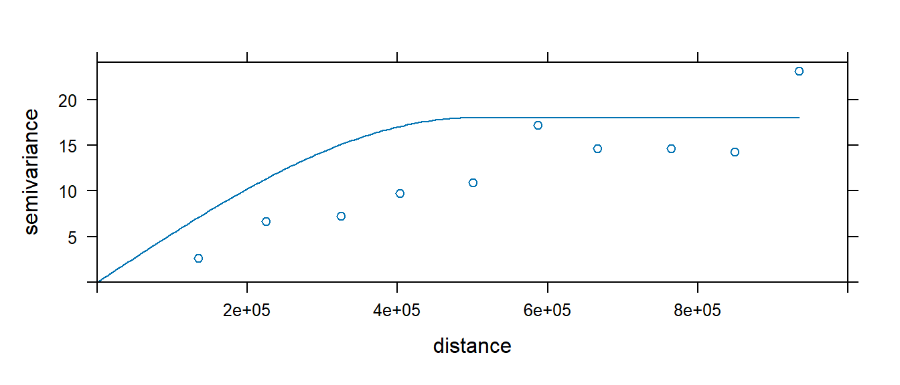
16.3.2.5 Kriging Interpolation
The variogram model is used by the kriging interpolator to determine localized weighting parameters. Recall that in IDW interpolation, the influence of neighboring points is controlled by a user-defined power coefficient that is applied uniformly across the entire study area. Every location therefore uses the same distance-decay rule.
Kriging takes a different approach. Instead of relying on a user-specified power parameter, it uses the variogram model to determine the weights assigned to neighboring observations. In effect, the interpolation weights are derived from the observed spatial autocorrelation structure of the data. Locations whose values have historically exhibited stronger spatial dependence exert greater influence on the prediction than locations exhibiting weaker dependence.
The mathematical implementation of kriging is considerably more involved than that of IDW and will not be covered here. Conceptually, however, kriging can be thought of as an interpolation method in which the data themselves determine the weighting scheme through the variogram model.
The resulting interpolation of the residual surface is shown below.
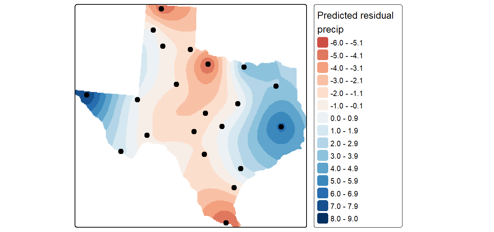
Recall that kriging was applied to the detrended residuals rather than to the original precipitation values. Consequently, Figure 16.17 represents localized variation not explained by the large-scale east-west trend. To generate the final precipitation map, the interpolated residual surface is added back to the trend surface.
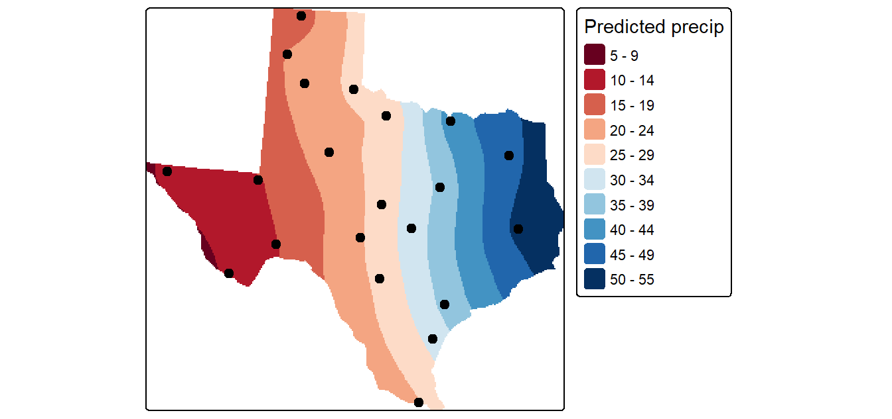
A valuable by-product of kriging is a map of the prediction variance, which provides a measure of uncertainty associated with the interpolated values. Lower variance indicates greater confidence in the prediction, whereas higher variance indicates greater uncertainty. Note that variance is reported in squared units.
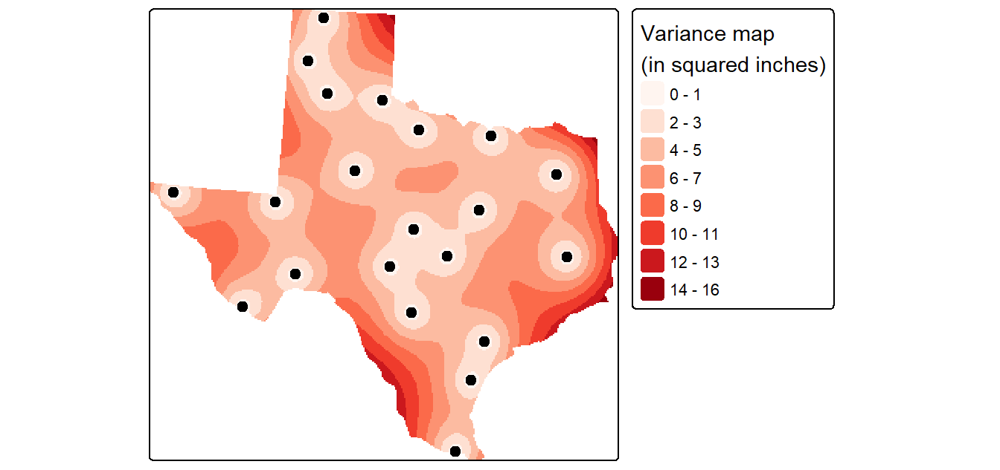
16.4 Summary
Spatial interpolation estimates values at unsampled locations from point observations that represent samples of a continuous field.
Interpolation methods can be divided into two broad categories: deterministic and statistical approaches.
Thiessen (proximity) interpolation assigns each unsampled location the value of the nearest sampled point, producing a tessellated surface with abrupt boundaries.
Inverse Distance Weighted (IDW) interpolation predicts values using a weighted average of nearby observations, where closer points exert greater influence than distant points.
The accuracy of an interpolation can be evaluated using leave-one-out cross-validation (jackknifing), RMSE, and maps of interpolation uncertainty.
Trend surfaces model broad spatial patterns using polynomial functions of spatial coordinates and can be used to interpolate values at unsampled locations.
Ordinary kriging differs from deterministic methods by explicitly incorporating information about spatial autocorrelation when determining interpolation weights. It involves removing large-scale trends, modeling spatial autocorrelation with a variogram, interpolating the residuals, and then adding the trend back to produce the final surface.
The variogram describes how similarity between observations changes with distance and forms the foundation of kriging interpolation.